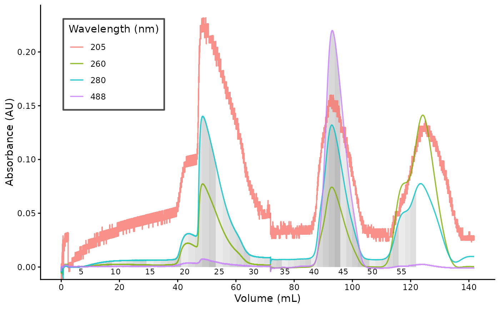

Plot Chromatogram with Fractions
Usage
chrom_plot_fractions(
data,
wl_frac = 280,
fractions = TRUE,
frac_include = "all",
frac_labelling = 5,
frac_text_size = 3,
frac_text_adjust = 1.3
)Arguments
- data
A chromatogram from
chrom_read_*(), plotted againstvolume, ortimeif it has no volume.- wl_frac
Wavelengths to show the fractionation scheme for.
- fractions
Logical, whether to incude fractions on the plot.
- frac_include
Specific fractions to include. Either "all" for all fractions, or a numeric vector of length 2, specifying the limits for the fractions to be included (e.g. c(10, 30) includes fractions from 10 till 30, including both).
- frac_labelling
How often to label the fractions. Every nth fraction is labelled, and the shading of the fractions repeats every nth fraction.
- frac_text_size
Size of the labels for the fractionation.
- frac_text_adjust
vjustfor the labels for the fractionation.
Examples
fl1 <- system.file("extdata",
"example_quadtec_1.TXT",
package = "chromr"
)
fl2 <- system.file("extdata",
"example_quadtec_2.TXT",
package = "chromr"
)
df1 <- chrom_read_quadtech(fl1)
df2 <- chrom_read_quadtech(fl2)
dat <- chrom_append_run(df1, df2)
chrom_plot_fractions(dat, wl_frac = c(280, 488))
